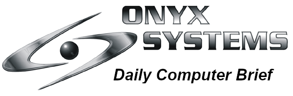

Your Daily Computer Brief
🔴 ALERT
Your phone rings. The caller says they are from Microsoft or Windows Support. They claim your computer has a virus, a security problem, or an expired license — and they need remote access to fix it. Sometimes they ask for a credit card or gift cards to "renew" your protection. This is a scam. Every single time. Microsoft does not call people out of the blue. They do not monitor your computer for viruses. They do not need remote access to fix anything. The person on the phone is a criminal trying to steal your money, your passwords, or both. What to do: Hang up immediately. Do not give them remote access. Do not read them any codes from your screen. Do not buy gift cards. If you are worried about your computer, call someone you trust — or bring it to a local shop you know. The rule: No legitimate company calls you to say your computer is infected. If someone calls claiming to be tech support, it is a scam. Period. Source: Federal Trade Commission — "How To Spot, Avoid, and Report Tech Support Scams" (consumer.ftc.gov)
Today in Tech
- Windows 11 26H2 (the 2026 Update) launched September 29. It adds AI-powered settings help, better Start menu and Taskbar customization, improved search, and new accessibility features — all delivered as a small enablement package on top of 24H2/25H2. No reinstall needed. (Source: Pureinfotech — September 29, 2026)
- LibreOffice 26.8 released August 26 as a free, open-source Microsoft Office alternative. It improves multilingual writing, typography, and chart compatibility — and deliberately includes NO AI features, so your documents stay on your computer. No account, no subscription, no telemetry. (Source: Cybernews — August 26, 2026)
- Microsoft's October Patch Tuesday fixed over 1,400 security flaws, including several actively exploited zero-days. If your PC hasn't updated since early October, open Settings > Windows Update and click Check for updates. (Source: Tech2Geek — October 17, 2026)
Daily Tip
Press Start and type "Display settings" — click the result. Under "Scale & layout," find the dropdown that says "100%" (or 125%, 150%). Change it to a higher number — 125% or 150% makes everything bigger. Click Apply. Text, icons, and menus all get larger instantly. No need to change each program separately.